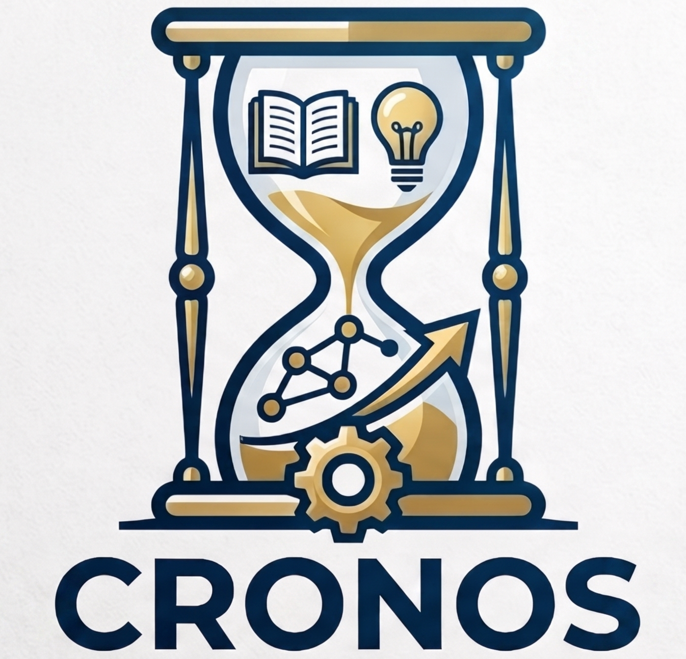

CRONOS
Convex Neural Networks via Operator Splitting
A scalable JAX framework for global optimization of two-layer neural networks via convex reformulation and operator splitting (ADMM).


A scalable JAX framework for global optimization of two-layer neural networks via convex reformulation and operator splitting (ADMM).



Welcome to the official implementation for the CRONOS project! We introduce the CRONOS algorithm for convex optimization of two-layer neural networks. This repository contains the official JAX implementation of the CRONOS paper, and allows installation as a handy pip package for all your binary classification needs.
The paper is available on arXiv (2411.01088) and the source code is hosted at github.com/pilancilab/CRONOS.
CRONOS handles high-dimensional, large-scale datasets up to full ImageNet.
Theoretical analysis shows CRONOS converges to the global minimum of the convex reformulation under mild assumptions.
Large-scale numerical experiments with GPU acceleration in JAX — VRAM-friendly without sacrificing speed.
Clone the repository and install from source:
git clone https://github.com/pilancilab/CRONOS.git
cd CRONOS
pip install -e .If you use this code in your work, please cite the paper:
@inproceedings{feng2024cronos,
title = {CRONOS: Convex Neural Networks via Operator Splitting},
author = {Feng, Miria and Frangella, Zachary and Pilanci, Mert},
booktitle = {Advances in Neural Information Processing Systems (NeurIPS)},
year = {2024},
url = {https://arxiv.org/abs/2411.01088}
}